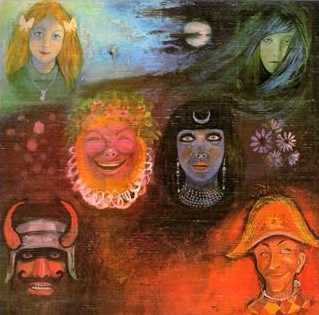
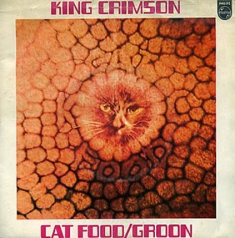
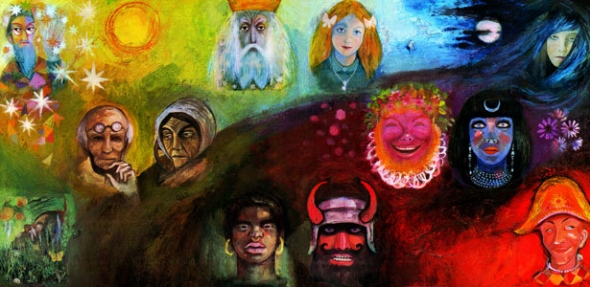

In the wake of Poseidon
In the wake of Poseidon
|
|
|
 ( En la estela de Poseidón ) Grabado a principios de 1970 (editado en mayo) El segundo álbum es una especie de transición, tanto en lo musical como en relación a la formación de la banda. Pero a pesar de esto es de alta calidad. McDonald, principal compositor de la primera encarnación de KC, se había ido. Lake canta la mayoría de los temas, pero ya está partiendo para juntarse a Keith Emerson y fundar otro grupo; el bajo lo tocó Peter Giles. El disco hereda varios aspectos del primer album: el estilo es muy similar, ya que algunos temas están hechos en base a piezas tocadas por la primera formación; algunas letras persisten con la crítica a la sociedad actual; y el lado A del disco de vinilo respetaba la estructura de los 3 temas del lado A del primer album: abría un rock-fusión frenético, seguía un reposo con un tema suave en el medio y cerraba un tema lento sinfónico con melotrón. En este caso el potente rock-fusión es Pictures of a city (cumple el rol de 21st Century schizoid man en el primero), que describe la realidad hostil de las grandes ciudades modernas (con el nombre A man a city era tocado por la primera formación en el ´69); el descanso es Cadence and Cascade (como el que producía I talk to the wind en el primero), cantado por Gordon Haskell, ex compañero de Fripp en una banda semiprofesional años atrás; y el tema sinfónico es In the wake of Poseidon (como Epitaph en el primero). Los 3 temas Peace... (...a beginning, ...a theme, ...an end) le dan unidad al disco; su segunda parte es una deliciosa pieza instrumental de solo guitarra acústica, algo inusual en el rock de aquella época pero que varios guitarristas del rock progresivo imitarían en el futuro. Cat food (cocompuesto por McDonald antes de su partida) ironiza sobre los alimentos que nos ofrece la sociedad de consumo; fue editado en simple y tiene sonidos jazzísticos que preanuncian musicalmente lo que sería el siguiente album, "Lizard". Por la deserción de McDonald, Fripp se hace cargo del melotrón y experimenta con el instrumento en The devil triangle (hecho en base al tema Mars, tocado habitualmente en vivo por la primera formación en el '69 y que a la vez era una adaptación de una pieza de la suite "The Planets", compuesta a principios del siglo 20 por el compositor clásico inglés Gustav Holst); este tema instrumental cumple la función experimental que en el primer album cumplió la parte improvisada de Moonchild, pero con un clima mucho más oscuro, realmente demoníaco. Después de la grabación del album solo Collins y Haskell quedaron como miembros permanentes del grupo junto a Fripp y Sinfield.
Letras de Sinfield - Música de Fripp, salvo tema 6, Cat food (Fripp/McDonald) Quinteto que grabó el tema Cat food y lo presentó en la BBC TV el 25 de marzo de 1970. De izquierda a derecha: Peter Giles, Tippett, Lake, Michael Giles y Fripp (sentado). Collins y Haskell se incorporaron más tarde para terminar el album.

Tapa del simple Cat food. El lado B contenía el tema Groon, un instrumental jazzero-experimental grabado solo por Fripp y los hermanos Giles que no fue incluido en el album pero se integró en posteriores recopilaciones; era tocado regularmente en vivo por la formación de 1971-72 como introducción a una improvisación.
Notas
 Según Alejandro Díaz Varón, la portada "Es una referencia al libro del mismo autor titulado El círculo mágico y a otra obra de Robert Gardner titulada El propósito del amor (1966). Estos dos artistas han trabajado juntos y han elaborado diverso material pictórico y literario basado en la idea de que la humanidad tiene 12 rostros, cada uno de ellos un arquetipo. Tammo de Jongh era una especie de monje que fundó una comuna naturalista que excluía a las mujeres en el Londres de finales de los 60. Su modo de vida llamó la atención de Sinfield." (King Crimson: crónica de un malestar).
|

 Fripp y
Tippett
Fripp y
Tippett